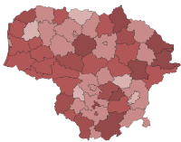
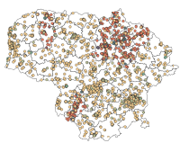
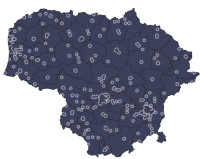

Pasirinkite aspektą: pavojus gyvybei/rizika savižudybei, savižudybių rodikliai ar psichologinė pagalba ir panaudokite žemėlapio sluoksnį sužinoti daugiau apie savižudybių reiškinį.
Standartizuoti savižudybių rodykliai

BPC skambučiai siejami su savižudybėmis

Pagalbos židiniai (įstaigos ir privatūs asmenys teikiantys prichologinę pagalbą 2,5 km buferiai)
